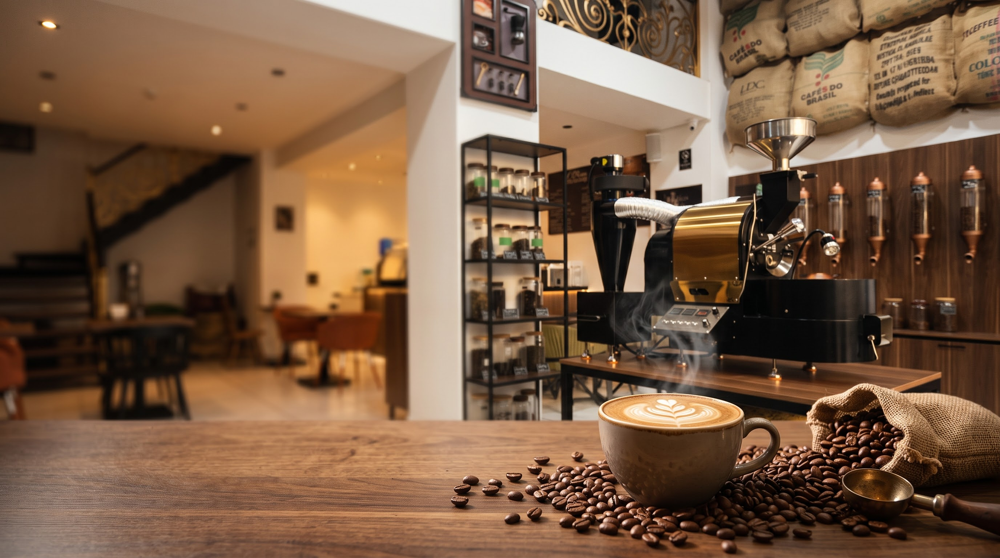

SEÇİLMİŞ MƏHSULLAR · 100 Q / ƏDƏD
Ən çox seçilənlər
bir toxunuşla səbətə.
ŞƏXSİ DAD TESTİ
Sənə uyğun qəhvəni
özün seç.
Gövdə, turşuluq və balans səviyyəsini əl ilə sürüşdürərək tənzimlə — kataloqdan sənə ən uyğun 1–2 qəhvəni dərhal göstərək.
Haqqımızda · Əlaqə
Qəhvə üçün
yaxşı bir səbəb.
Baku Coffee Factory
Fresh roasted & specialty coffee
Takeaway • Coffeeshop.